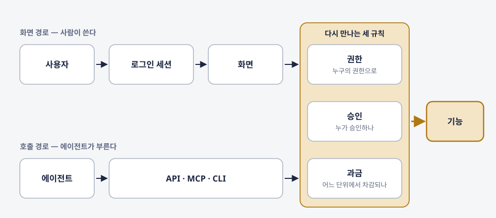
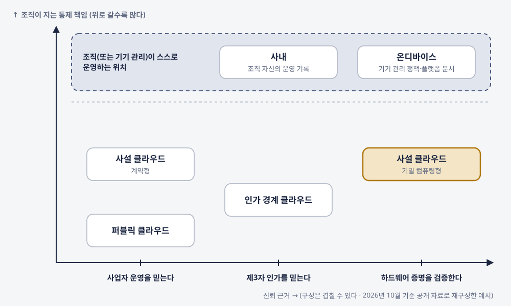
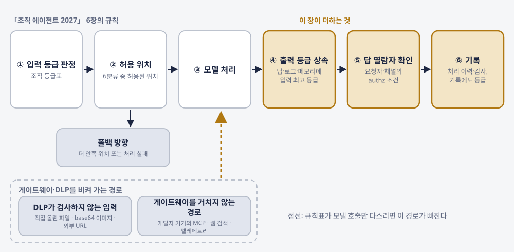
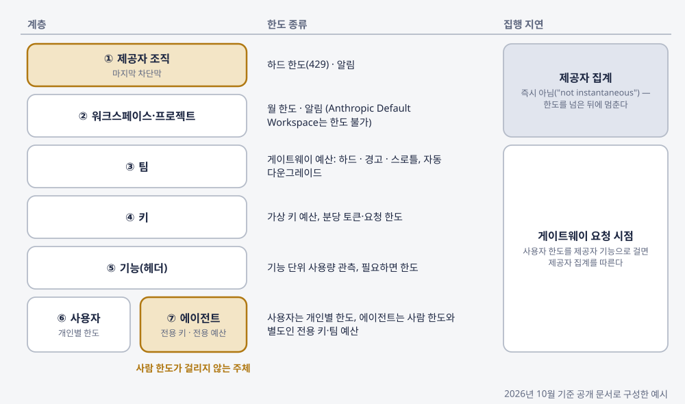
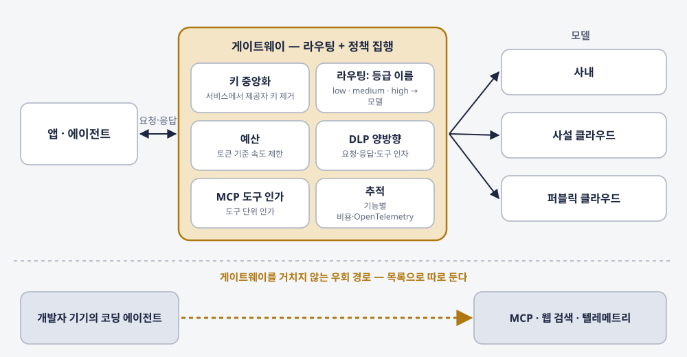
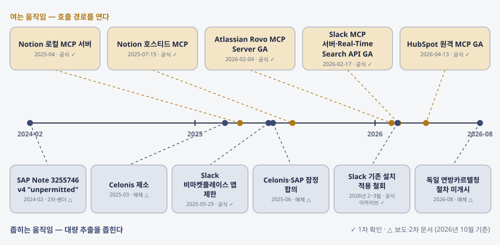
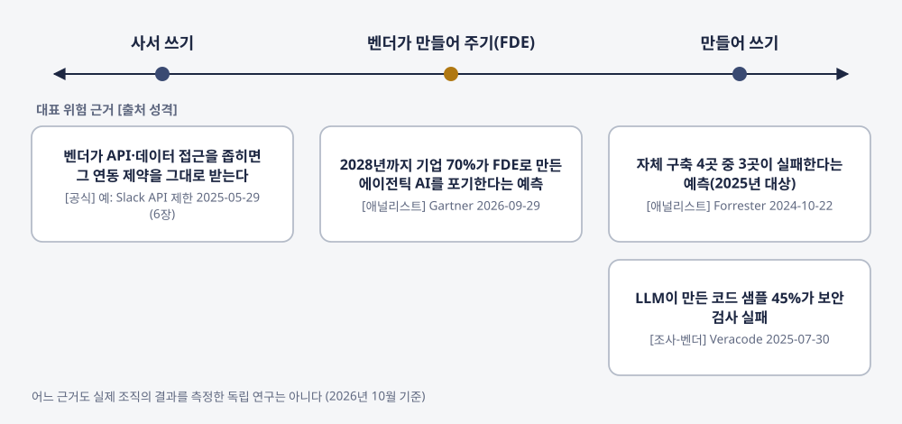
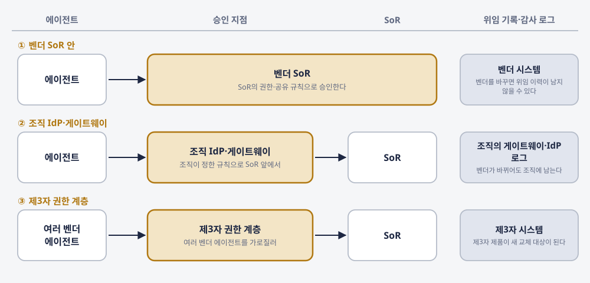
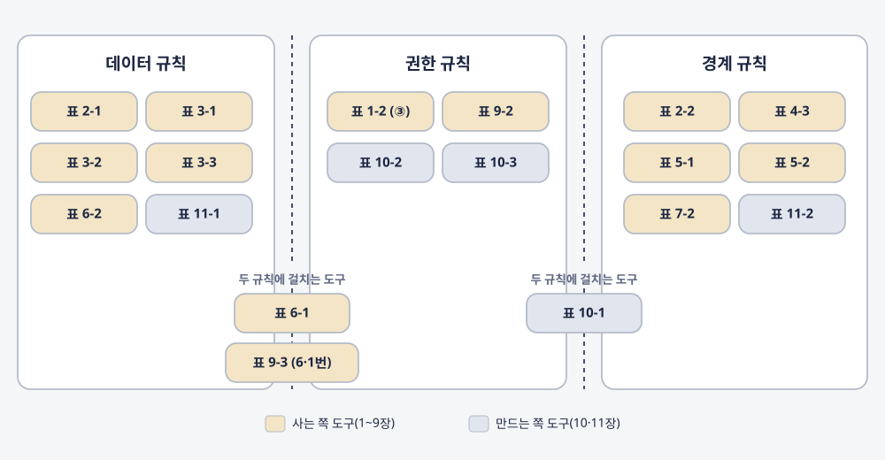

에이전트가
사는 곳
모델은 어디서 돌리고, SaaS는 어떻게 사며, 통제권은 어디에 남는가
"에이전트 시대에 조직의 통제권은 어디에 남는가."
— 이 책을 끌고 가는 질문

화면을 팔던 회사가 스스로 물었다
"Why should you ever log into Salesforce again?"
우리가 이미 돈을 내고 쓰는 SaaS가 에이전트의 호출을 받기 시작하면, 무엇이 호출로 바뀌고 무엇이 그대로 남는가?
— Salesforce 공동창업자 Parker Harris(2026년 3월). 2026-04-15 Headless 360 발표문이 이 질문을 다시 올렸다 [공식]
같은 해 모델 쪽에서는 대기업 100곳 조사에서 세 개 이상의 모델 계열을 쓴다는 곳이 81%였습니다. 로컬 모델 도입과 SaaS 재계약은 별개로 보이지만, 둘 다 데이터의 처리 위치와 실행 권한을 정하는 일입니다.
모델과 화면이 갈라져도, 조직이 붙잡을 것은 세 규칙이다
| 규칙 | 묻는 것 | 조직이 붙잡을 것(표 12-1에서) |
|---|---|---|
| 데이터 | 무엇이 어디로 가나 | 입력 등급 → 허용 위치, 출력 등급 상속, 결과를 볼 수 있는 사람, DLP 빈틈, 외부 저장·추출 경로, 반출 조항, 학습 허용 기본값 |
| 권한 | 누구의 이름으로 부르나 | 연결한 사람의 권한 상속, 조직 IdP 연동, 최소 scope + 단계적 재인가, 권한을 승인하는 시스템, 라이선스 귀속 |
| 경계 | 어디서 막고 어디에 남기나 | 정책 집행점 게이트웨이, 역할 고정 배정 + 정책 라우팅, 공급망 규칙, 크레딧·예산 한도, 실행 전 승인·사내 서버 목록 |
모델이 로컬과 클라우드로 갈라지고 소프트웨어가 화면과 데이터로 갈라져도, 조직이 붙잡을 것은 데이터·권한·경계 규칙이다 — 12장 표 12-1의 세 묶음.
책 전체에서 가상의 요청서 하나를 따라간다
한 영업 지원 부서가 이미 쓰는 외부 AI 클라이언트의 에이전트를 고객 관리 SoR에 연결해, 상담 기록을 요약하고 다음 할 일을 고객 레코드에 적게 하고 싶다고 요청한다.
저자가 겪은 일이 아니라 설명을 위해 만든 가상 사례다(서문). 12장에서 요청서는 조건을 달고 돌아간다.
장마다 같은 자리에 같은 장치를 두었다
순서대로 읽지 않아도 된다. GPU 서버 품의가 올라와 있다면 4장, SaaS 재계약을 앞두고 있다면 6·7·9장, MCP 서버를 붙이려 한다면 10장. 모르겠다면 12장 표 12-1부터.
외부 편집 검수서를 저자 결정으로 전부 반영했다
- 사실 검증 에이전트가 검수서의 지적과 문장 수정안 35건을 1차 원문에 다시 대조(V1~V20)한 결과를 따라 3~12장의 사실 문장을 고쳤다. 검수서가 짚지 않은 오류(3장 Purview의 레이블 표시·상속 등)도 이때 바로잡았다.
- 용어 넷을 바꿨다 — 답 열람자 → 결과를 볼 수 있는 사람, 허용 동사 → 허용 작업, 권한 승인 위치 → 권한을 승인하는 시스템, 민감 스위치 원장 → 민감정보 설정 목록. 그림 6점(2-1·3-1·5-1·8-1·9-1·11-1)을 다시 그렸다.
- 구성: 가상 요청서를 서문에서 먼저 소개해 여러 장에 이어 붙이고, 2장의 위치를 겹칠 수 있는 대표 구성 여섯 가지로 정리하고, 4·7장에 가상 값 계산을 넣고, 5장에서 라우팅과 정책 집행을 나눴다.
- 가설 카드 S5-2의 근거 강도를 약으로 바로잡았다(집계 중 7·약~중 2·약 7). 참고문헌에 공개 출처 5건의 서지를 복원했고, 본문은 업종으로 일반화한 표기를 유지한다.
- 표지를 교체하고 삽화 7점(부 도입면 4점, 4·8·12장 3점)을 더했다. 외부 검수자가 이미지 생성 도구로 만든 시안을 저자가 채택한 그림이고, 상상으로 그린 장면이다.
판 이력: v1.0.0(2026-10-24) 초판 초안 · v1.1.0(2026-10-25). 검수서는 스스로 인용된 외부 자료 전체를 재검증한 사실 검증 보고서가 아니라고 밝혔고, 그 검수가 저자의 전문 검토를 대신하지 않는다. 번호를 붙인 본문 그림 13점은 각 장 원고의 사실만으로 스크립트가 그린 도식이다.
스택이 다시 짜인다
기록 시스템 벤더가 화면을 거치지 않는 호출 경로를 열고, 한 조직이 여러 모델을 여러 위치에서 돌리게 되면, 소프트웨어 쪽과 모델 쪽에서 각각 무엇이 바뀌고 무엇이 그대로 남는가?
- 1장. 화면에서 호출로
- 2장. 두 개의 두뇌
같은 자료실로 들어가는 두 입구
삽화. 사람들은 유리 로비를 지나 안내 데스크로 들어가고, 오른쪽 좁은 다리로는 호박빛 꾸러미가 로비를 거치지 않고 건물로 들어간다.
화면 경로와 호출 경로가 같은 자료실에 닿는다는 1부의 질문을 옮긴 비유다. 상상으로 그린 장면으로, 실제 조직·시설·제품 화면이나 시스템 구조가 아니다. 표지와 삽화 7점은 외부 검수자가 이미지 생성 도구로 만든 시안을 저자가 채택했다.
기록 시스템 벤더가 먼저 화면을 우회했다
| 제품 | 발표일 | 경로 | 과금 단위 | 권한 상속 주장 |
|---|---|---|---|---|
| Salesforce Headless 360 | 2026-04-15 | API·MCP 도구(60개 이상)·CLI | 발표문에 가격 언급 없음. Agentforce ARR 정의에 포함(FY27 2분기부터) | 승인·비즈니스 규칙·권한·공유 규칙·컴플라이언스 통제 상속 |
| ServiceNow Action Fabric + MCP Server | 2026-05-05(GA) | MCP 서버, 흐름·플레이북·승인·카탈로그 헤드리스 실행 | Assist(화면 사용과 같은 소비 화폐) | AI Control Tower 경유 신원·권한 범위·감사 |
| Workday Agent Gateway | 2025-06-03 | MCP 호환 API | Flex Credits(구독 포함, 연 갱신, 단가 미공개) | 에이전트를 Agent System of Record에 등록해 권한 관리 |
표 1-1 발췌, 2026년 10월 기준 [공식] ✓. "권한 상속 주장"은 벤더가 발표문에서 한 말이다 — 사는 쪽이 계약 전에 시연이나 시험 환경에서 확인할 항목으로 읽는다.
두 경로는 권한·승인·과금에서 다시 만난다

화면이 사라지면 "정말 삭제하시겠습니까" 같은 확인 장치도 사라진다. 호출 경로에서 그 장치가 어디로 가는지 따로 확인한다.
화면→호출 점검표 — SaaS 하나에 질문 넷
| 질문 | 확인할 것 | 답이 비면 |
|---|---|---|
| ① 헤드리스 경로가 있나 | API·MCP 서버·CLI 중 무엇을 공식 제공하나, GA인가 프리뷰인가, 어느 SKU에 포함되나 | 비공식 우회가 생길 수 있다. 사내 사용 현황부터 확인 |
| ② 헤드리스 호출의 과금 단위 | 좌석 안 포함인가, 크레딧·소비 화폐 차감인가, 호출당 과금인가. 화면 사용과 같은 단위인가 | 벤더에 서면 질의. 답 전에는 외부 에이전트 연결을 시범 범위로 |
| ③ 권한은 어떻게 이어지나 | 사용자 권한 상속인가 별도 서비스 계정인가, 위임 기록이 어디에 남나 | 시험 환경에서 권한 밖 레코드 조회를 직접 시도 |
| ④ 외부 에이전트를 어디까지 | 허용 클라이언트, 허용 동작, 호출 상한, 관리자 승인 절차 | 6장 구매 판단표 "MCP 조건"으로 넘긴다 |
표 1-2 발췌. ServiceNow에 네 질문을 대 보면, 발표문이 비교적 자세한 벤더인데도 온전히 답이 나오는 것은 하나다. 서문의 가상 요청서라면 고객 관리 SoR 하나를 놓고 이 네 질문부터 채운다.
고를 수 있는 위치가 늘자, 책임을 나누는 일이 복잡해졌다
표본 100곳은 업계 전체 비율로 읽기 어렵다 — 한 모델만 쓰는 구성이 소수로 줄고 있다는 방향까지만 읽힌다. NVIDIA 수치는 벤더가 자기 하드웨어로, CC에 맞춘 별도 최적화를 거쳐 잰 값이다.
대표 구성 여섯 가지 — 겹칠 수 있고, 행마다 신뢰의 근거가 다르다

계약형은 계약을, 기밀 컴퓨팅형은 하드웨어 증명을, 인가 경계는 제3자 인가를 믿는다. 한 배치가 두 구성에 해당할 수 있다(표 2-1).
가설 카드 — 2027년 말에 판정한다
가설이다 — 사실이 아니다. S2-1의 근거는 모두 공급자 쪽에서 나왔고, 규제 업종이 이 구성을 택했다는 공개 사례는 이번 조사 범위에서 찾지 못했다.
경계를 긋는다
모델을 둘 수 있는 위치가 늘었다면, 어떤 데이터를 어느 위치로 보낼지, 그 경계 안에서 무엇이 더 싼지, 그 규칙을 어느 지점에서 집행할지는 무엇을 근거로 정하는가?
- 3장. 등급은 답에도 붙는다
- 4장. 손익분기는 가정이 정한다
- 5장. 라우터가 정책이 된다
관문에서 확인하는 꾸러미
삽화. 바닷가 언덕의 자료 보관소 옆 관문에서 경비원이 호박빛 꾸러미를 확인하고, 멀리 구름 위 건물로 이어지는 길 하나는 차단봉으로 닫혀 있다.
데이터를 어디로 보낼지 정하는 경계를 비유한 그림이고, 특정 보안 제품의 동작은 그리지 않았다. 상상으로 그린 장면으로, 실제 조직·시설·제품 화면이나 시스템 구조가 아니다. 표지와 삽화 7점은 외부 검수자가 이미지 생성 도구로 만든 시안을 저자가 채택했다.
입력 쪽에 그은 선
내가 일하는 조직에는 개인정보 보호를 맡는 조직이 따로 있고, 고객 정보를 다루는 데이터는 외부 모델에 쓰지 못하게 되어 있다.
판단 기준은 "고객 정보인가"이고, 이것은 모델에 들어가는 입력에 매기는 등급이다.
— 3장, 저자 인터뷰 답에서
고객 정보가 든 상담 기록을 사내 모델로 요약했다고 해 봅시다. 서문의 가상 요청서가 바로 이 경우입니다. 입력 규칙은 지켰는데, 그 요약문은 몇 등급일까요? 이 책은 답이 입력 가운데 가장 높은 등급을 물려받는 규칙을 출력 등급 상속이라고 부릅니다.
위치와 등급을 맞춰도 남는 것 — 결과를 누가 보는가

"… there is still the question of who inside the company gets to see the answer." — HN 댓글 bitweis [커뮤니티, 검증 필요]
경계 규칙표 v2 — 입력·위치 다음에 더한 열
| 열 | 적는 것 | 비워 두면 생기는 일 |
|---|---|---|
| 출력 등급 상속 | 답·로그·메모리 각각의 등급. 기본값은 입력 최고 등급, 낮추는 예외와 그 승인자 | 요약문이 낮은 등급처럼 퍼진다 |
| 결과를 볼 수 있는 사람(속성) | 답을 받을 수 있는 사람·그룹·채널의 조건 | 요청자 권한으로 만든 답이 더 넓은 범위에 열린다 |
| 폴백 방향 | 허용 위치가 막히거나 세션 중 입력 등급이 올라갔을 때 넘길 방향 | 장애 때 허용되지 않은 위치로 넘어갈 수 있다 |
| 우회 경로 | 업로드 파일, 개발자 기기의 MCP·웹 검색·텔레메트리 | 규칙표가 모델 호출만 다스린다 |
| 결정 주체 | 이 행의 규칙을 정하고 예외를 승인하는 조직 | 규칙이 바뀌어도 누가 바꿨는지 모른다 |
표 3-1 발췌(전체 10열). DLP에는 벤더가 스스로 밝힌 빈틈이 있다 — 프롬프트에 직접 올린 파일 미검사, 정책 반영 최대 4시간(Purview), base64 미디코딩·외부 URL 미검사·캐시 응답 검사 생략(Cloudflare) [공식]. 표 3-2가 이 빈틈을 네 행으로 점검한다.
"6개월이면 회수"와 "API가 2.2배 싸다"가 함께 나오는 이유
| 가정 | 관점 A: Beri(뉴스레터) | 관점 B: Lenovo LP2368(판매사 백서) |
|---|---|---|
| 가동률 | 업무 시간만, 월 약 30% | 연속 고가동 |
| 비교 대상 | 같은 오픈 모델의 API(100만 토큰당 0.20달러) | 클라우드 IaaS, 프런티어 모델 API |
| 계산에서 뺀 것 | — | 클라우드 쪽 스토리지·이그레스·지원(백서가 밝힘) |
| 인력 | 엔지니어 0.25명 임금 월 약 2,830달러(0.44달러 계산과 별도), 24시간 온콜은 여러 명이 든다고 적음 | 공개 본문의 운영비 가정에 인건비 항목 없음 |
| 결론 방향 | API가 싸다(GPU 임대료만으로 0.44달러, 2.2배) | 온프레미스가 싸다("as little as 6 months") |
표 4-1 발췌. [2차] 개인 뉴스레터 vs [벤더 백서] 서버 판매사. 손익분기 처리량 = GPU 시간당 비용 ÷ API 100만 토큰 단가 × 1,000,000 ÷ 3,600. Beri 글은 프런티어 API를 비교하지 않았다 — 비교 단가가 높으면 손익분기 처리량이 그 비율만큼 낮아진다는 것은 공식에서 나온 산술이고, 다른 모델끼리 비교하면 같은 과업의 성공률과 재작업 비용까지 맞춰야 한다.
요청서의 요약 물량에서는 직접 돌리는 쪽이 비싸다
설명을 위해 정한 가상 값이고, 측정 결과가 아니다(4장). GPU는 한 달 내내 빌려져 있는데 요약은 업무 시간에만 돈다. 오픈 모델의 요약을 상담원이 더 자주 고친다면 쓸 만한 요약 한 건당 비용으로 다시 비교한다(표 4-2 ③을 두 번).
단가는 내려가는데, 청구서는 커질 수 있다
앞의 두 숫자는 다른 것을 잰다 — 같은 성능의 가격 vs 워크플로 한 건의 비용. Gemini 사고는 차단이 아니라 알림만 하는 예산의 사례라(Google Cloud 문서도 알림 전용 예산은 지출을 자동으로 막지 않는다고 적는다), OpenAI 하드 한도의 초과 폭을 보여 주지 않는다.
사람에게 건 한도는 에이전트에 걸리지 않는다

"내 조직에는 개인별 사용 한도는 있지만, 조직 에이전트에는 그런 한도가 없다."(저자 인터뷰 답) 에이전트를 별도 예산 주체로 둔다.
라우터를 만든 팀이 라우터를 내렸다
"Everyone is building LLM routers, we deprecated ours."
"The amount saved is paid somewhere else, and that cost is harder to estimate."
— Manifest 팀 블로그, 2026-07-31 HN 132점 [블로그 주장, 수치 미검증]
폐기 이유는 넷입니다. 프롬프트만 봐서는 난도를 알 수 없고, 프리픽스 캐시가 라우팅보다 싸고("Cache reads are between 75% and 90% cheaper"), 모델을 바꾸면 행동 일관성이 무너지고, 그 관리에 사람 손이 듭니다. 팀이 접은 것은 요청 단위 자동 라우터입니다.
라우팅 세 유형 — 살아남는 것은 고정 배정과 정책 라우팅
| 항목 | 요청 단위 자동 라우팅 | 역할 단위 고정 배정 | 규칙 기반 정책 라우팅 |
|---|---|---|---|
| 결정 시점 | 요청이 들어올 때마다 | 에이전트·하위 역할을 설계할 때 | 정책을 정할 때 |
| 쓰는 정보 | 프롬프트로 추정한 난도 | 역할(계획·실행·탐색)과 과제 유형 | 데이터 등급, 사용자 권한, 목적지 |
| 캐시 영향 | 캐시 적중률이 떨어지기 쉽다 | 모델 풀이 작아 캐시 유지에 유리 | 규칙이 바뀌지 않는 한 같은 경로 |
| 감사 가능성 | 왜 그 모델로 갔는지 설명하기 어렵다 | 배정표가 곧 기록 | 규칙 자체가 감사 대상 정책 |
표 5-1 발췌. 폐기 조건 세 줄: 도입 뒤 캐시 적중률이 떨어졌는가, 출력 형식·도구 호출 회귀가 늘었는가, 평가·관측 인력 시간이 절감액보다 큰가. 근거는 블로그·커뮤니티 수준이다(표 12-1 근거 강도 약~중).
게이트웨이는 정책 집행점이고, 그래서 표적이다

등급 이름 칸이 라우팅, 나머지 다섯 칸이 정책 집행이다. 게이트웨이 소프트웨어는 2026년에 공급망 공격을 두 번 받았다 [공식](표 5-2).
가설 카드 — 2027년 말에 판정한다
가설이다 — 사실이 아니다. 3장에는 카드가 없다. S5-2는 v1.1.0에서 약으로 바로잡았다 — 두 근거가 모두 벤더의 제품 전략이고, 구매 조직 안의 소유 이동을 직접 보여 주는 조사나 공개 사례는 찾지 못해 반증 조건을 독립 게이트웨이 쪽 움직임으로 잡았다.
SaaS 다음
에이전트가 SaaS를 화면 대신 호출로 쓰기 시작하면, 사는 쪽은 MCP가 있다는 말 뒤의 조건, 호출이 차감되는 단위, 사서 쓸지 만들어 쓸지, 계약서에 남길 조항을 무엇으로 확인하는가?
- 6장. 화면은 내주고 데이터는 지킨다
- 7장. 좌석에서 사용량으로
- 8장. 사서 쓰나 만들어 쓰나
- 9장. 잠금은 권한으로 옮겨 간다
펼친 계약 폴더
삽화. 남색 폴더가 작은 광장이 되고, 그 안에 열쇠 꾸러미, 쌓인 호박빛 토큰, 장부처럼 생긴 문, 바깥으로 난 출구가 놓였다. 한 구매자가 그 배치를 살핀다.
권한·사용량·출구를 계약에서 함께 본다는 3부의 질문을 옮긴 비유이고, 실제 과금 단위나 가격을 나타내지 않는다. 상상으로 그린 장면으로, 실제 조직·시설·제품 화면이나 시스템 구조가 아니다. 표지와 삽화 7점은 외부 검수자가 이미지 생성 도구로 만든 시안을 저자가 채택했다.

호출은 열고, 대량 추출은 좁혔다
9개월쯤 뒤인 2026-02-17 Slack은 MCP 서버와 Real-Time Search API를 GA로 냈다 — 외부 서버에 저장하지 않는 조회형 접근이다. "MCP를 지원하나"는 모두가 "예"라고 답할 수 있는 질문이 됐다.
여는 움직임과 좁히는 움직임이 같은 시기에

위 줄의 개방은 대부분 벤더 공식 발표로, 아래 줄의 제한은 Slack을 빼면 보도와 2차 문서(△)로 확인된다.
구매 판단표 "MCP 조건" — "있나"에서 "어떤 조건으로 있나"로
| 조건 | 확인할 것 | 통과 기준(출발값) |
|---|---|---|
| 허용 클라이언트·조직 IdP | 우리 조직의 클라이언트가 목록에 있나, 관리자 승인 없이 개인이 연결할 수 없게 설정되나 | 조직 표준 클라이언트가 있거나 관리자가 직접 등록 |
| 허용 작업 | 읽기·생성·수정·삭제 중 무엇을 MCP로 허용하나, 객체마다 다른가 | 업무에 필요한 작업이 문서로 명시, 삭제는 따로 끈다 |
| 호출 상한·차감 단위 | 좌석·요금제별 한도, 호출이 크레딧·소비 화폐를 차감하나 | 예상 업무량의 2배 이상, 호출당 차감량이 문서로 공개 |
| 초과 기본값·상한 | 넘으면 차단인가 자동 과금인가 | 관리자가 상한을 걸 수 있고, 기본값을 계약 전에 확인 |
| 권한 상속·민감정보 설정 | 연결한 사용자의 권한을 따르나, 민감 데이터 설정을 켜면 막히는 객체 | 권한 밖 레코드는 반환하지 않음을 시험 환경에서 확인, 막히는 객체 목록을 문서로 |
| 외부 저장 허용 | 가져간 데이터를 외부 서버에 저장해도 되나 | 우리가 쓰려는 방식(조회형·색인형)이 약관과 맞는다 |
표 6-1 발췌(전체 10항). 통과 기준은 이 책이 제안하는 출발값이다. 벤더 RFP의 질문 목록으로 그대로 보내도 된다. 통과하지 못한 항목은 9장 계약 조항 체크리스트로 넘긴다.
같은 550달러에 크레딧이 세 배 가까이 — 싸진 것인가?
공식 발표문에 크레딧 단가와 기능별 소모량이 없고 묶인 기능도 바뀌어, 36%의 전제는 계약서로 확인해야 한다. 가정이 맞더라도 36%는 활용의 문턱일 뿐이다. 소진률은 계약을 얼마나 활용했는지를, 효익은 완료한 업무·절약한 시간·재작업으로 따로 잰다. 좌석은 남고, 그 위에 크레딧이 얹힌다.
크레딧을 많이 쓴 쪽이 이득을 본 쪽은 아니다
설명을 위해 정한 가상 계약이다. 실제 벤더의 값이 아니고 측정 결과도 아니다(7장). 서문의 가상 요청서처럼 외부 에이전트가 요약을 쓸 때마다 크레딧이 빠진다. 다시 쓰는 비율이 줄면 같은 600달러로 얻는 요약이 늘고, 초과 기본값을 꺼 두었다면 경우 B는 2만 크레딧에서 멈춘다.
크레딧 계약 점검표 — 계약서에 남길 문구
| 항목 | 계약서에 남길 문구(예시) |
|---|---|
| 단가·환산율 공개 | "행동 유형별 크레딧 차감량 표를 계약 부속서로 둔다" |
| 변경 고지·상한 | "차감량 변경은 ○일 전 서면 고지, 계약 기간 중 인상은 ○% 이내" |
| 소진률 보고 주기 | "월별 소진 보고서를 기능·연결 클라이언트 단위로 제공한다" |
| 미사용 이월·소멸 | "미사용 크레딧의 이월 한도와 소멸 시점을 명시한다" |
| 초과 기본값 | "초과 사용은 관리자가 켜기 전까지 차단한다" |
| 외부 에이전트 호출 차감 | "외부 클라이언트 호출의 차감 내역을 클라이언트별로 분리 보고한다" |
| 번들 라인아이템 분해 | "번들 구성 요소별 가격 내역을 주문서에 기재한다" |
표 7-2. 문구는 이 책이 제안하는 예시, ○는 조직이 정할 값. 초과 기본값과 외부 에이전트 호출 차감은 외부 에이전트를 연결하기 전에 확정한다.
탈SaaS의 상징이 했던 말
"Will all companies do what Klarna does? I doubt it."
출처를 따라가면, AI로 직접 만든 소프트웨어가 SaaS를 대신했다기보다 상당 부분은 다른 SaaS로 갈아타고 데이터를 통합한 것이다.
— Klarna CEO, 2025년 3월(X 게시물, TechCrunch 2025-03-04 재인용) [매체] △
Workday는 다른 SaaS(Deel)로 바꿨고, Salesforce CRM은 대체 SaaS와 사내 개발을 섞었으며(세부는 비공개), Slack은 계속 씁니다. 사내에서 만들어 쓰다가 SaaS로 되돌아간 기업의 1차 공개 사례는 이번 조사 범위에서 찾지 못했습니다.
사서 쓰기 · 벤더가 만들어 주기 · 만들어 쓰기

Gartner: 2028년까지 기업 70%가 벤더 상주 구축(FDE)으로 만든 에이전트를 포기한다 [애널리스트]. 어느 쪽 근거도 독립 연구는 아니다.
잠금은 데이터 소유에서 권한 승인으로

"which agent is cleared to act? On what data? With what limits?" — Jamin Ball [투자자 에세이]. 이 축의 근거 강도는 약(표 12-1).
계약 조항 체크리스트 7항 — 3부 도구가 물은 조건을 한 장에
| # | 조항 | 확인할 내용 |
|---|---|---|
| 1 | 라이선스 귀속 | "사용자" 정의에 에이전트가 들어가는가, 간접 접근·멀티플렉싱이 에이전트 호출에 어떻게 적용되는가 |
| 2 | 외부 에이전트 호출 차감 | 제3자 에이전트의 호출이 어느 크레딧·좌석에서 차감되는가, 초과 기본값과 상한 |
| 3 | 크레딧 환산율 | 단가·환산율 공개, 변경 고지 기간과 인상 상한 |
| 4 | 성과 정의·판정 | 성과 과금의 성과 정의, 판정 주체, 이의 절차 |
| 5 | API 경로·속도 제한 | 공식 추출 경로와 속도 제한, 사내 앱과 상용 앱의 차등 |
| 6 | 데이터 반출 | 형식·기한·비용, 권한 위임·감사 로그 포함 여부, EU 2027-01-12 전환 수수료 금지·한국 제27조 제5항 대응 |
| 7 | FDE 지식 이전·IP·출구 | 벤더 구축 산출물, 지식 이전, 지적재산권, 전환·출구 책임 |
표 9-3. 이 책의 설계 도구다 — 7번만 Gartner FDE 보도자료에 같은 취지의 원문 권고가 있다. 한국 클라우드컴퓨팅법 제27조 제5항은 계약으로 달리 정하면 그 계약을 따르게 해, 국내 계약에서는 조항 문구가 실제 권리를 정한다.
가설 카드 — 2027년 말에 판정한다
가설이다 — 사실이 아니다. 이 책의 축 가운데 권한과 직접 이어지는 S9-1·S9-2는 둘 다 근거가 약하다. 시장 전망과 별개로, 이번 계약에서는 누가 에이전트의 권한을 승인하는지, 약관이 에이전트를 사용자로 어떻게 정의하는지를 계약서에 적어야 한다.
에이전트가 고객일 때
같은 규칙을 파는 쪽에서 보면 무엇을 갖춰야 하는가? 에이전트가 우리 서버를 부르고, 우리 문서를 읽고, 디렉터리에서 우리 제품을 고른다면 만드는 쪽은 무엇을 준비하고, 그 트래픽의 청구서는 누가 받는가?
- 10장. 에이전트가 부르는 서버
- 11장. 문서와 디렉터리, 그리고 결제
손님이 된 에이전트
삽화. 저녁 도서관에서 사서가 읽을 자리와 자료를 준비하고, 호박빛 작은 방문자가 책을 들고 다가온다. 뒤로는 서고 입구가, 옆으로는 금빛 난간을 두른 카운터가 보인다.
에이전트를 문서와 제품의 사용자로 맞는다는 4부의 질문을 옮긴 비유다. 상상으로 그린 장면으로, 실제 조직·시설·제품 화면이나 시스템 구조가 아니다. 표지와 삽화 7점은 외부 검수자가 이미지 생성 도구로 만든 시안을 저자가 채택했다.

같은 요청이 되풀이되자
"혹시 저번에 공유했던 API 스펙 다시 공유주실 수 있나요?"
처음에는 스펙 전체를 그대로 넘겼고, 곧 토큰 한도에 걸렸다.
— 한 국내 핀테크 기업의 기술블로그(2025-10-27) [기업 기술블로그]
이 팀은 쓰지 않는 API를 빼고, Swagger JSON을 줄이고, 용도별로 나눠 페이지 단위로 넘겼습니다. 서문의 가상 요청서를 반대편에서 보면, 고객 관리 SoR의 MCP 서버를 만드는 쪽이 요약 읽기와 레코드 쓰기를 어떤 도구와 scope로 나눌지가 이 장의 질문입니다.
도구 호출 한 번, 에러가 갈라지는 두 지점

"Tool Execution Errors contain actionable feedback that language models can use to self-correct" — MCP 사양 [표준]
고객 쪽 클라이언트에 거부권이 없을 가능성이 높다
그래서 되돌리기 어려운 동작은 서버가 아예 내놓지 않고 백엔드로 넘기거나(한 결제사), 부를 수 있는 도구를 화이트리스트로 제한한다(한 간편결제사). Scalekit의 결론도 B2B라면 사용자별 OAuth·테넌트 격리·감사 기록을 갖춘 MCP다.
MCP 서버 체크리스트 14항
| # | 항목 | # | 항목 |
|---|---|---|---|
| 1 | 의도 단위 도구 — 엔드포인트 1:1 감싸기 금지 | 8 | 결정적 순서·캐시 필드(ttlMs·cacheScope) |
| 2 | 네임스페이스 — 공통 접두사 | 9 | 서버 MUST 4종 — 입력 검증·접근 통제·호출량 제한·출력 정제 |
| 3 | 이름과 설명 — 언제 쓰고 한계가 무엇인지 | 10 | 최소 scope + step-up(403 insufficient_scope) |
| 4 | annotation — 실제 동작과 일치, 안전을 맡기지 않음 | 11 | 토큰 패스스루 금지, audience 검증 |
| 5 | 의미 있는 반환값 — 저수준 식별자 대신 이름과 문맥 | 12 | 되돌리기 어려운 행동 — 빼거나 화이트리스트 |
| 6 | 응답량 예산 — 페이지네이션·필터·최대 크기 | 13 | 동적 URL 차단, 끈 기능의 도구는 목록에서 빠지는가 |
| 7 | 실행 에러 — isError: true + 무엇을 고칠지 | 14 | 최소 데이터 수집 |
표 10-1. 9·10·11번은 코드와 설정으로, 13번은 기능을 실제로 꺼 보고 tools/list를 다시 받아 확인한다.
문서를 읽는 쪽에 에이전트가 들어왔다
웹 전체가 아니라 한 벤더가 호스팅하는 문서만의 수치다. 7월 보고의 "66%"는 요청 수와 페이지 로드를 섞어 과장될 수 있다. 검색 노출을 위한 llms.txt에는 근거가 없고, 작업 중 에이전트를 위한 쪽은 벤더 자사 근거만 있다.
공식 레지스트리는 목록만, 고르는 곳은 따로 있다

공식 레지스트리는 사설 서버를 받지 않고, 사내 서버는 사설 레지스트리(적으면 카탈로그)에 두라고 권한다.
가설 카드 — 2027년 말에 판정한다
가설이다 — 사실이 아니다. 결제 쪽은 2026년 10월 기준 어느 것도 확정 인프라가 아니다(표 11-3, 상당수가 v0.x·얼리 액세스). S11-2는 한 벤더의 자사 데이터뿐이다.
조직이 쥐는 세 가지
1~11장의 도구 24개를 데이터·권한·경계 세 규칙으로 줄이고, 서문의 가상 요청서를 끝까지 따라가 새 에이전트·SaaS·모델 요청이 들어올 때 쓸 점검 순서를 남긴다.
- 12장. 조직이 쥐는 세 가지
- 부록 A. 설계 도구 색인
- 부록 B. 2027년 말 가설 카드 점검표
사는 쪽 도구와 만드는 쪽 도구가 같은 규칙 아래 놓인다

사는 쪽이 표 6-1로 묻는 조건이 만드는 쪽에는 표 10-1의 설계 요구가 되고, 표 7-2의 차감 내역은 표 11-4의 트래픽 구분으로 셈한다.
통합 규칙표 — 규칙마다 꺼낼 표와 근거 강도
| 규칙 | 조직이 붙잡을 것 (발췌) | 쓰는 도구 | 근거 강도 |
|---|---|---|---|
| 데이터 | 입력 등급 → 허용 위치, 출력 등급 상속 | 표 3-1, 표 2-1 | 중 |
| 데이터 | DLP 빈틈(업로드·이미지·외부 URL·반영 지연) | 표 3-2, 표 3-3 | 강(벤더가 스스로 밝힌 한계) |
| 권한 | 최소 scope + 단계적 재인가, 토큰 패스스루 금지 | 표 10-1, 표 10-2 | 강(MCP 사양) |
| 권한 | 권한을 승인하는 시스템, 위임 기록·감사 로그 위치 | 표 9-2 | 약 |
| 경계 | 게이트웨이를 정책 집행점으로(키·예산·DLP·도구 인가·추적) | 표 5-2 | 중 |
| 경계 | 크레딧·예산 한도, 제공자 하드 한도 | 표 4-3, 표 7-2 | 중 |
표 12-1 발췌(전체 16행). 행마다 조직에 지금 그 규칙이 있는지를 있음·없음·부분으로 적는다. "반대·한계" 열은 지우지 않는다 — 규칙이 있어도 그 한계까지 막은 것은 아니라는 표시다.
도입 순서표 — 앞 단계에서 멈추면 뒤는 채우지 않는다
| 요청 유형 | 점검 순서(표 번호) | 멈추는 조건 |
|---|---|---|
| 외부 에이전트를 SoR에 연결 | 3-1 → 3-2 → 1-2 → 6-1 → 7-2·4-3 → 5-2 → 9-2 → 9-3 | 입력 등급이 허용 위치와 맞지 않음, 권한 상속을 시험 환경에서 확인 못 함, 초과 기본값을 모름 |
| 새 SaaS 구매·재계약 | 1-2 → 6-1 → 6-2 → 7-2 → 8-2 → 9-2 → 9-3 | 헤드리스 호출의 과금 단위를 서면으로 받지 못함, 데이터 반출 조항 없음 |
| 새 모델·배치 위치 도입 | 3-1 → 2-1 → 2-2 → 4-2 → 4-4 → 5-1 → 5-2 | 데이터 등급이 그 위치를 허용하지 않음, 모델 반입 절차를 통과하지 못함 |
| 우리 제품을 에이전트에 개방(만드는 쪽) | 6-1(사는 쪽 질문에 미리 답하기) → 10-1 → 10-2 → 10-3 → 11-1 → 11-2 → 11-4 | 기본 scope를 좁힐 수 없음, 되돌리기 어려운 동작을 서버에서 막을 수 없음 |
표 12-2 발췌. 결정 주체는 역할 이름으로 적는다 — 데이터 보호 조직, IT·보안, 구매, 현업, 플랫폼, 재무, 제품, DevRel. 사람 이름은 적지 않는다.
"이미 벤더가 공식으로 열어 둔 기능"이라는 요청서는 이렇게 돌아간다
외부 AI 클라이언트의 에이전트를 고객 관리 SoR에 연결해, 상담 기록을 요약하고 다음 할 일을 고객 레코드에 적게 하고 싶다.
"읽기와 요약은 승인, 레코드 쓰기는 사람 승인을 거쳐 승인, 초과 사용은 차단"
— 12장, 서문에서 소개한 가상 요청서(2027년 1월, 영업 지원 부서)가 세 규칙을 통과한 결과
데이터: 고객 정보의 허용 위치가 외부 클라이언트의 모델을 받아들이지 않으면 첫 단계에서 보류. 받아들인다면 요약문에 고객 정보와 같은 등급을 붙이고, 결과를 볼 수 있는 사람을 그 레코드를 볼 수 있는 사람으로 묶는다. 권한: 연결한 사람의 권한 안에서만 고치는지 시험 환경에서 확인하고, 쓰기에는 별도 승인을 붙인다. 경계: 게이트웨이를 지나지 않으면 우회 경로로 올리고, 크레딧 초과 기본값을 끈 뒤 상한을 걸고, 승인한 서버를 사내 서버 목록에 등록한다.
질문 하나, 답 하나
에이전트 시대에 조직의 통제권은 어디에 남는가.
모델이 로컬과 클라우드로 갈라지고 소프트웨어가 화면과 데이터로 갈라져도, 조직이 붙잡을 것은 데이터·권한·경계 규칙이다.
— 서문, 12장
근거 강도 순서는 카드의 중요도 순서와 같지 않습니다. 시장 전망과 별개로, 이번 계약에서는 누가 에이전트의 권한을 승인하는지, 약관이 에이전트를 사용자로 어떻게 정의하는지를 계약서에 적어야 합니다.
가설 카드 16장, 근거 강도 순으로
판정은 받아들임(반증 조건이 일어나지 않고 지지 근거가 더해짐) · 범위 축소(일부 업종·규모·제품에서만) · 보류(판정할 자료가 없음 — 무엇이 없었는지 메모) · 버림(반증 조건 관찰). 가장 믿는 카드와 가장 의심하는 카드를 묻는 질문에 저자의 답은 "잘 모르겠다"였다.
다음 주에 할 일은 한 줄이다
- 지금 쓰는 에이전트 하나를 고른다.
- 표 12-1의 첫 행 — 그 에이전트가 다루는 데이터의 입력 등급과 허용 위치를 적는다.
- 출력 등급 상속 열에 그 답이 어느 등급을 물려받는지 한 줄로 써 본다.
- SaaS 재계약이 다가온다면, 표 1-2의 ②번(과금 단위) 답이 빈 SaaS 가운데 재계약일이 가장 가까운 곳부터 벤더에 서면 질의를 보낸다.
가장 빨리 낡을 곳은 7장의 가격·크레딧 표와 11장의 디렉터리·결제 표다. 계약이나 제출에 쓰기 전에 각 표의 공식 문서를 다시 열어 확인 날짜를 고쳐 적는다.
에이전트가
사는 곳
모델은 어디서 돌리고, SaaS는 어떻게 사며, 통제권은 어디에 남는가
초안 판본 v1.1.0(2026-10-25) — 외부 편집 검수 반영, 저자 전문 검토 전. 틀린 곳을 알려 주면 무엇을 고쳤는지 판 이력에 장과 문장 단위로 남깁니다.
CC BY-NC-SA 4.0 · ksangki.github.io/agent-stack